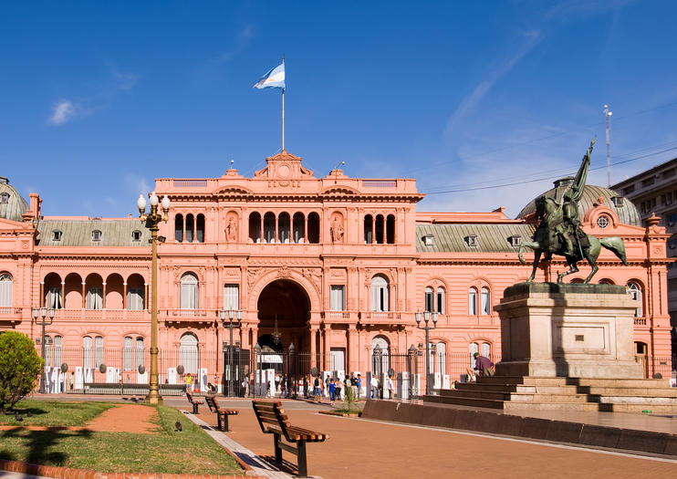

Lugares para Visitar

La Casa Rosada
Sede del gobierno argentino, famosa por su característico color rosa.
Obelisco
Uno de los monumentos más icónicos de Buenos Aires en la avenida 9 de Julio.

Puerto Madero
Un moderno barrio a la orilla del río con restaurantes y paseos.